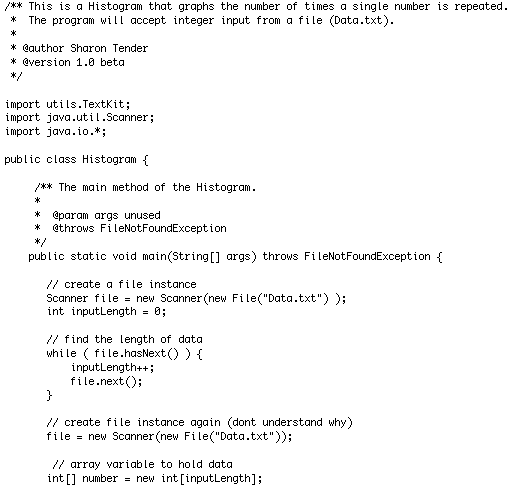

Console Histogram Screenshot

Code available by request for prospective employers.
Requirements: Create a Java non-GUI stand-alone application that displays a histogram. It should accept user input integer values or read values from a data file. The output shall consist of 25 lines of stars (asterisks), one line for each of the possible input values (the numbers 1 to 25). The number of stars drawn shows how many times each value was entered as input. Each line should be labeled with the value it is showing the bar for. Your Java program must use a method called lineOfStars to create the stars for each line of output. This method must take a single int parameter which says how many stars to draw. This method must be a static method of a class called TextKit, which must be in a package called utils.